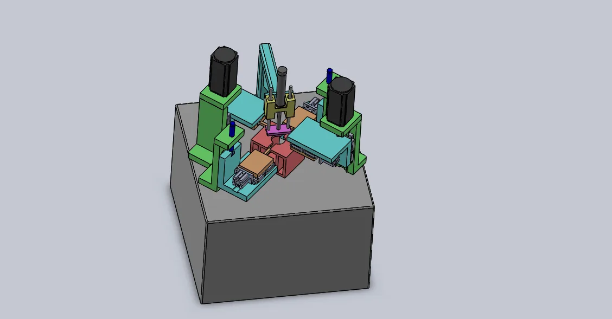

Machines made for
real production.
VSK brings machine design, controls, fluid power, retrofit and precision manufacturing together around the production requirement.

One production problem.
Three ways to solve it.
Machine building, machine second-life engineering and precision manufacturing — connected by the same practical machine-tool knowledge.

Application study, machine concept, mechanical design, hydraulic and pneumatic systems, controls, assembly, trials and commissioning.
Built around the
operation.
Real VSK projects, shown as engineering references rather than catalogue products. Each machine begins with a process requirement and ends with a working production solution.
Keep the capability.
Renew the machine.
VSK approaches retrofit as a complete machine-engineering problem — mechanical condition, electrification, controls, drives, feedback systems and recommissioning considered together.


Process knowledge
behind the part.
Turning, machining and grinding are supported by the same machine-tool knowledge used to build and restore production equipment. That means the discussion can start with the drawing, but it does not stop there.
Measured where
it matters.
“Custom built machines, CNC retrofit solution services provider.”
Built by people who
understand machines.
Established in February 2011, VSK combines machine building, retrofit and precision manufacturing with practical knowledge across mechanical, electrical, controls and fluid-power engineering.
From Peenya, Bengaluru, the team supports production requirements across India — from a new SPM or machine retrofit to component manufacturing, automation, spindle work, industrial spares and engineering support.
Tell VSK what the
machine needs to achieve.
Share the operation, component, machine condition, controller or production challenge. The enquiry is prepared for direct email — this preview does not store your information.